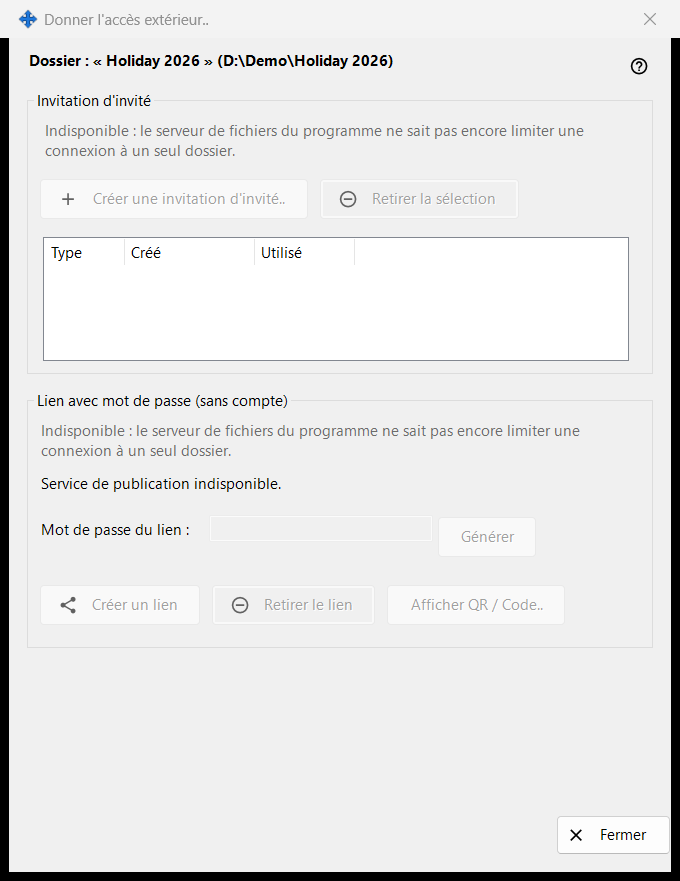
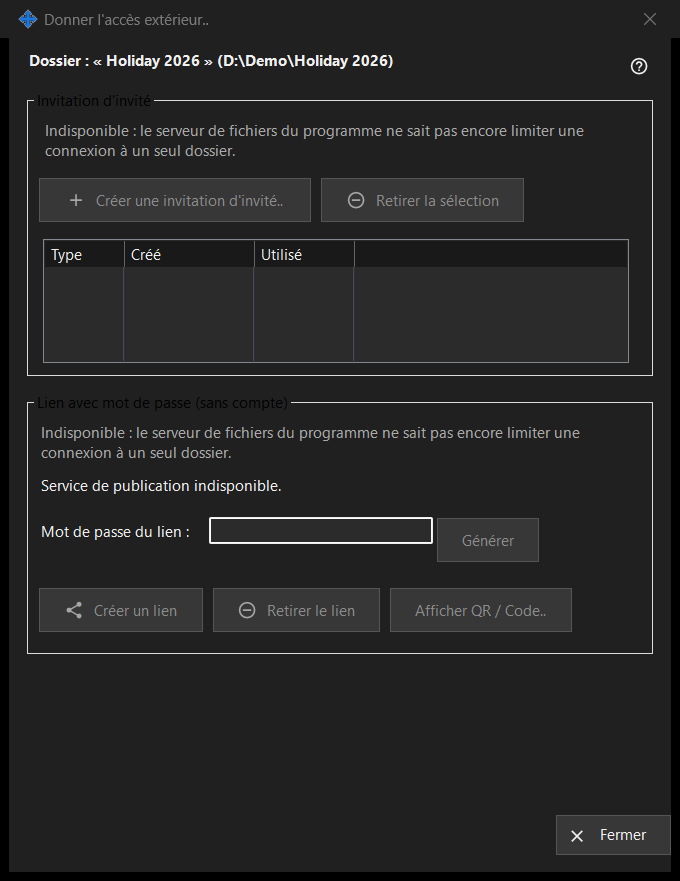

Donner l'accès extérieur
Objectif
Contrôle l'accès à un dossier partagé pour des personnes extérieures à vos propres appareils : une invitation d'invité, ou un lien avec mot de passe qui n'exige pas de compte. Elle s'ouvre depuis le bouton «Donner l'accès extérieur..» de la fenêtre principale de Share Manager pour le dossier sélectionné. Dans cette version, les commandes qui créent un nouvel accès sont désactivées et la fenêtre en indique la raison, tandis qu'un accès existant peut toujours être retiré.


Dans cet ordre
- Lisez la ligne d'en-tête avec le nom et le chemin du dossier.
- Dans chaque groupe, lisez la ligne de raison ; tant qu'elle est affichée, rien de nouveau ne peut être créé.
- Pour retirer un accès, sélectionnez une invitation et cliquez sur «Retirer la sélection», ou cliquez sur «Retirer le lien».
- Cliquez sur «Fermer» (Échap) pour quitter.
Les éléments
Dossier et état
La ligne en gras indique le dossier et son chemin. La ligne d'état en bas signale le dernier résultat. Quand le service de publication ne fonctionne pas, la fenêtre indique «Service de publication indisponible.» et ses boutons sont désactivés.
Invitation d'invité
Le groupe comporte «Créer une invitation d'invité..», «Retirer la sélection» et une liste avec Type, Créé et Utilisé pour les invitations d'invité de ce dossier. Retirer supprime l'invitation ; le dossier et ses fichiers ne sont pas supprimés.
Lien avec mot de passe (sans compte)
L'état indique «Lien non créé.» ou «Le lien est actif.» La zone «Mot de passe du lien :» est masquée et «Générer» la remplit. «Créer un lien» devient «Mettre à jour le lien» tant qu'un lien est actif. «Retirer le lien» demande d'abord, car toutes les sessions actives sur le lien prennent fin. «Afficher QR / Code..» affiche le lien sous forme de code.
Pourquoi la création est désactivée
Chaque groupe affiche une ligne de raison : le serveur de fichiers du programme ne peut pas limiter une connexion à un seul dossier. Tant qu'elle est affichée, toutes les commandes qui créent des invitations ou des liens sont désactivées. Le retrait d'un accès existant dépend uniquement de ce qui existe.
Paramètres du gestionnaire · Paramètres de partage SFTP · Paramètres du serveur d’échange